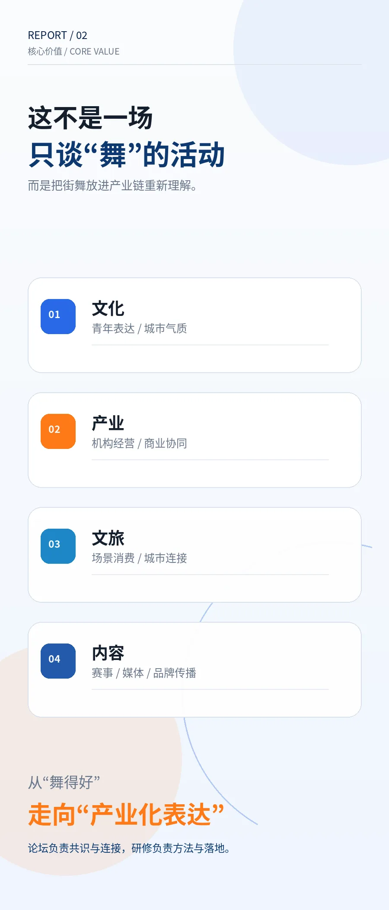
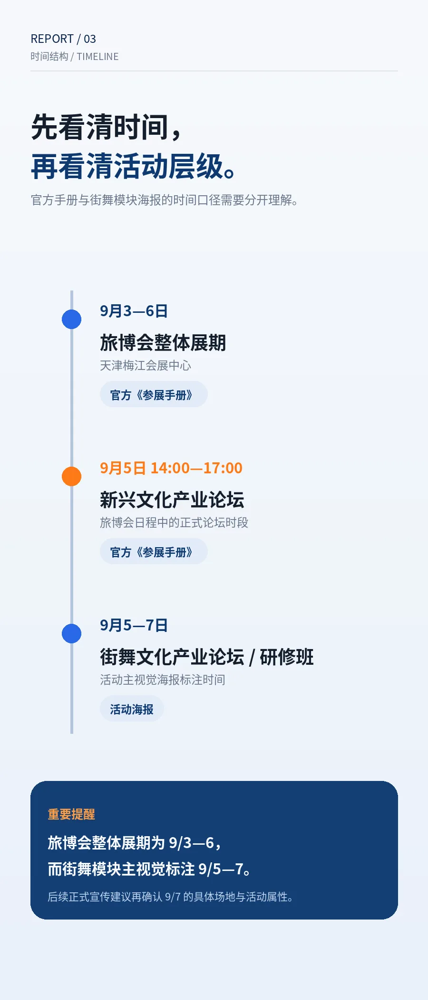
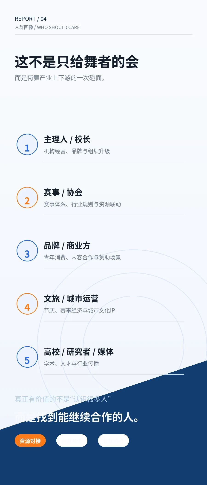
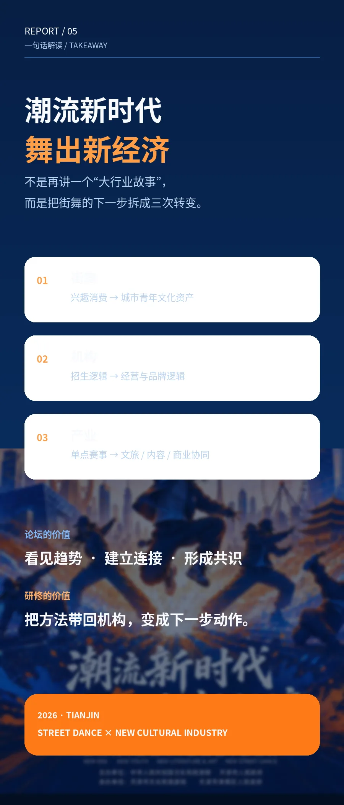

9月5日 论坛沙龙 / 9月6日-7日 研修班
01
EVENT SIGNAL
先把活动看清楚，再判断市场机会。
新时代 / 新青年 / 新文艺 / 新街舞
梅江会展中心
旅博会整体展期
放在文旅大盘里看街舞，不再只是看单点赛事热度。
新兴文化产业论坛
论坛沙龙窗口，适合建立共识、交换资源、看趋势。
街舞文化产业论坛 / 研修班
研修班窗口，适合把想法拆成机构经营、内容传播与落地动作。
证据边界
活动硬信息来自本次用户提供的海报与图卡。未检索到可公开核验的官方网页时，不擅自补充报名人数、嘉宾名单或主办背书。
02
MARKET THESIS
街舞的新市场，不是把“舞”卖得更贵。
它真正要完成的是一次角色升级：从“兴趣班、演出、比赛”的单点供给，走向“青年社群、城市内容、文旅消费、品牌合作、人才培养”的复合系统。
文化表达
青年表达 / 城市气质 / 中国故事
机构经营
招生逻辑 / 课程产品 / 教练成长
文旅场景
街区活动 / 节庆消费 / 城市连接
内容传播
赛事素材 / 媒体叙事 / 品牌记忆
商业协同
赞助权益 / IP 联名 / 长期合作
我对这场论坛的判断它不应该只解决“谁来跳一场”，而要解决“街舞如何成为下一代城市青年消费和文化资产”。
03
DATA LITERACY
看规模，更要看口径。
《中国街舞产业发展研究报告》相关公开信息。
注意：人次不是去重人数，同一人多次学习会重复计入。
说明供给端已经很大，但不能自动等于高质量经营。
这三个数说明什么？
它们说明街舞已经不是小众爱好，而是有培训、赛事、内容、商业和城市文化外溢的行业。但真正的市场机会不在“人数很大”这句话里，而在谁能把人群、场景、产品和长期复购组织起来。
学习 / 活动人次热度口径
去重参与者用户口径
有偿从业者劳动口径
稳定职业者生计口径
机构 / 城市 / 品牌产业口径
04
WHO SHOULD CARE
这不是只给舞者的会。
主理人 / 校长
把“招生”升级成经营模型：课程分层、教练成长、复购路径、城市资源。
赛事 / 协会
从单场热闹走向全年体系：规则、评审、赞助权益、城市联动。
品牌 / 商业方
不要只买露出，要进入青年真实现场：内容共创、体验场景、社群转化。
文旅 / 城市运营
把街舞放进节庆、街区、夜经济和城市更新，形成可逛、可拍、可消费的青年场景。
高校 / 研究者 / 媒体
把街舞从“热闹素材”变成可研究、可记录、可传播的新文化样本。
05
SOURCE MATERIALS
把海报拆成可传播的信息。




06
GROWTH MODEL
论坛真正的价值，是把人带进下一步动作。
ONE
HIPHOP
共识
连接
案例
课程
内容
订单
HIPHOP
会前
用 H5 做议题预热：谁应该来、为什么来、来了要解决什么问题。
会中
收集观点、问题和合作意向，把论坛从“听会”变成“资源碰面”。
会后
输出复盘、案例、对接清单和训练计划，形成长期社群资产。
07
PRO MARKETING COPY
专业营销话术：不同对象，说不同语言。
给主理人 / 校长
如果你今年还只是在卷低价课、卷老师、卷朋友圈招生，真正该看的不是又一个活动，而是街舞机构下一轮经营逻辑。2026 中国街舞论坛把文化、产业、文旅、内容和商业协同放到同一张桌子上。来这里，不是为了听热闹，而是为了找到下一个可复制的增长模型。
给品牌 / 商业方
年轻化不是把 logo 放到海报角落。街舞的价值在于真实现场、青年表达和高频内容生产。与其买一次曝光，不如进入一个能持续生成内容、社群和城市记忆的文化场景。ONE HIPHOP 适合作为品牌理解青年文化、建立合作样板的入口。
给文旅 / 城市伙伴
城市需要的不只是一个节目，而是能让年轻人愿意到场、停留、拍摄、消费和分享的内容系统。街舞可以连接广场、商圈、展会、夜经济和青年社群。论坛的意义，是把一场表演变成城市文化运营的方法论。
公众号正文开场建议
街舞行业正在进入一个新的阶段。过去我们讨论“谁跳得好”，今天要开始讨论“街舞如何变成产业、城市和青年文化共同参与的新经济”。2026 中国街舞论坛，值得每一个主理人、赛事方、品牌方和城市文旅伙伴认真看一次。
08
TAKEAWAY
一句话总结。
街舞的下一轮机会，不是把更多年轻人塞进同一套培训和比赛逻辑，而是把舞者、机构、赛事、城市、品牌和内容平台重新组织起来。
会场给的是入口，真正的市场在会后。参考与边界
《中国街舞产业发展研究报告》相关公开信息：CHUC 原文页面。
中国青年报关于中国街舞规模与青少年成绩的报道：中国街舞：英雄出少年。
活动时间、地点、主题与图卡内容：来自用户本次提供素材；未公开核验的细节不作为事实扩展。